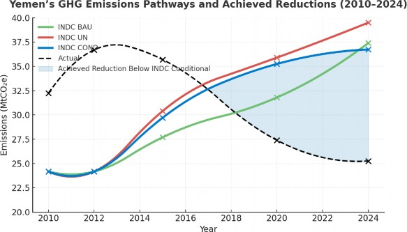
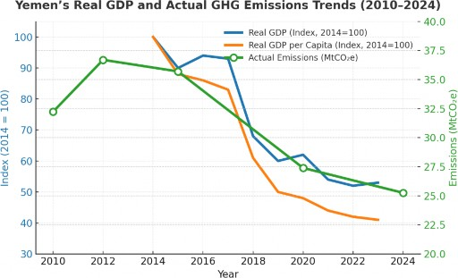
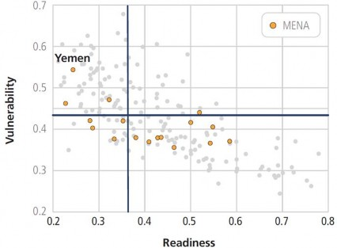

Yemen stands at a pivotal moment where the convergence of fragility, economic contraction, and intensifying climate risks threatens to reverse decades of development progress. Prolonged conflict has eroded state institutions, weakened productive capacity, and disrupted essential services, leaving over 80 % of the population below the poverty line. Inflation, currency depreciation, and declining revenues have deepened fiscal pressures, while critical infrastructure—water systems, power plants, ports, and health facilities—has suffered extensive damage. The effects of climate change compound these challenges, as recurrent droughts, floods, and heatwaves accelerate the degradation of land, water, and livelihoods, reducing productivity and constraining recovery. Without urgent climate-informed action, Yemen’s GDP could decline by an additional 3–4 % annually by 2040, whereas integrated adaptation and low-carbon investments could yield a 1.5 % annual GDP gain and restore a path toward sustainable growth.
Despite these compounding crises, Yemen views climate action not as a burden but as an opportunity to rebuild on a more resilient, inclusive, and sustainable foundation. The country’s climate agenda aligns with its broader vision for recovery and peacebuilding, embedding climate resilience across all governance, reconstruction, and development processes. However, the absence of reliable climate, environmental, and socioeconomic data remains a critical constraint, limiting evidence-based decision- making, monitoring, and the design of effective policy and investment responses. Yemen’s NDC 3.0 Vision therefore underscores the need to strengthen national data systems, early-warning mechanisms, and institutional capacity to generate and manage climate information. It sets forth a national framework that links climate resilience with economic diversification, social stability, and human development. Vision prioritizes water security, renewable energy expansion, climate-smart agriculture, resilient urban and coastal infrastructure, ecosystem restoration, and climate-ready health systems as key pathways toward a low-emission, climate-resilient economy by 2035. It also emphasizes inclusive participation, ensuring that women, youth, internally displaced persons (IDPs), and vulnerable groups are engaged as drivers of climate action and beneficiaries of its outcomes.
Yemen’s climate ambition is guided by five strategic principles: (1) integration of climate and development across all planning processes; (2) an adaptation-first approach to safeguard livelihoods and stability; (3) building a low-carbon and climate-resilient economy that targets at least 35 % renewable energy by 2035; (4) promoting inclusivity and climate justice to ensure equitable benefits; and (5) mobilizing domestic and international finance through innovation and partnerships. Collectively, these principles shape a unified national effort to transition from crisis to resilience, aligning Yemen’s development trajectory with the Paris Agreement and the outcomes of the Global Stocktake.
The NDC 3.0 Vision also defines a structured roadmap for full NDC preparation and implementation. By 2026, Yemen will finalize its sectoral consultations, co-benefit analysis, and investment framework, culminating in the submission of it completed Nationally Determined Contribution (NDC 3.0) to the UNFCCC. This process will operationalize Yemen’s climate ambition through measurable mitigation and adaptation targets, guided by enhanced transparency, strengthened institutions, and a national commitment to transform climate challenges into opportunities for resilience, stability, and sustainable peace.
Yemen stands at a critical juncture where overlapping crises of fragility, economic contraction, and environmental stress threaten to reverse decades of development progress. More than nine years of protracted conflict have fragmented the economy, weakened state institutions, and eroded the foundations of productive capacity. The dual monetary and fiscal systems, declining oil exports, and disruptions to trade have created severe macroeconomic imbalances, while inflation and currency depreciation continue to undermine purchasing power and investment confidence. Real GDP per capita has declined by over 50 % since 2015, positioning Yemen among the poorest economies globally, with more than 80 % of the population living below the poverty line. The national economy contracted by 1.5 % in 2024, reversing the modest growth recorded in 2022, as oil exports remained blocked and fiscal revenues fell by more than 30 %. Inflation exceeded 30 % in late 2024, driven by exchange rate volatility and rising import costs, while the fiscal deficit widened to 4 % of GDP, financed largely through monetary expansion. Foreign reserves declined to US$ 1.3 billion, barely one month of import coverage, reflecting the erosion of external buffers. Meanwhile, remittances, estimated at US$ 6 billion annually, and humanitarian assistance have become the primary stabilizing forces sustaining basic consumption. The private sector operates far below capacity due to insecurity, disrupted supply chains, and chronic fuel shortages, while public investment has nearly ceased. The cumulative effect of these pressures has pushed Yemen’s economy into a cycle of low productivity, high dependency, and limited fiscal space for recovery.
Beyond the immediate economic crisis, Yemen’s development trajectory is increasingly constrained by climate-related vulnerabilities that reinforce structural fragility. The country’s extreme water scarcity— among the most acute worldwide—combined with recurrent droughts, floods, and heat stress, accelerates the degradation of land, infrastructure, and livelihoods. These pressures directly affect macroeconomic performance by lowering agricultural and industrial output, intensifying fiscal burdens, and constraining investment in productive sectors. The compounding impacts of environmental degradation and institutional fragility have further undermined the resilience of households and markets. According to the World Bank’s Country Climate and Development Report ( CCDR 2024), climate change could reduce Yemen’s GDP by 3–4 % annually by 2040 under a pessimistic scenario, while strategic investments in renewable energy, resilient infrastructure, and water management could generate up to a 1.5 % annual GDP gain, highlighting the potential of climate-informed economic recovery to reverse current trajectories.
Yemen’s economic and climate change are thus mutually reinforcing. Climate stress acts as a structural brake on recovery, amplifying fiscal and social pressures, while economic fragility weakens adaptive capacity and exacerbates vulnerability to climate impacts. The resulting cycle of degradation and underdevelopment transforms environmental risks into persistent macroeconomic instability. Breaking this cycle requires positioning climate action at the core of Yemen’s recovery strategy. Expanding renewable energy access, improving water efficiency, restoring ecosystems, and strengthening climate governance are central to stabilizing the economy, reducing poverty, and creating the foundations for inclusive and sustainable growth. In this context, climate action represents not only an environmental necessity but a macroeconomic imperative—essential for Yemen’s stability, resilience, and long-term development.
Yemen’s NDC 3.0 Vision sets an integrated pathway that links climate resilience, economic recovery, sustainable development, and peacebuilding—shifting the country from crisis to resilience, ambition, and inclusion. Climate impacts are treated as core macro-stability and security risks, not peripheral environmental issues. The Vision connects national recovery and peace agendas with Yemen’s Paris Agreement commitments, underpinned by stronger institutions, scaled climate finance, and evidence- based delivery. Inclusion is a pillar of resilience: women, youth, IDPs, and vulnerable groups are engaged as co-designers and implementers of solutions. Grounded in national priorities and aligned with the Global Stocktake, Yemen’s NDC Stocktake and Gap Assessment, and the Enhanced Transparency Framework (ETF), this Vision signals readiness for enhanced ambition and credible, transparent implementation.
By 2035, Yemen will have established the enabling conditions for a climate-resilient and low carbon economy that advances human well-being, ecosystem recovery, and durable peace. Climate action will be a driver of jobs, especially for 70% of the population under 25.
Yemen’s climate action agenda is guided by five overarching principles that position climate resilience at the center of its national development, recovery, and peacebuilding framework. These principles define the country’s transition toward a climate-resilient, and low-emission economy that safeguards lives, restores ecosystems, and strengthens social cohesion as follows:
Integrated Climate and Development Agenda
Climate action is embedded within all aspects of governance, development planning, and reconstruction. Yemen’s NDC Vision promotes a unified approach where climate considerations inform national policies, infrastructure investments, and service delivery, ensuring that recovery and growth are both sustainable and resilient.
Adaptation-First Approach
Given Yemen’s extreme vulnerability and historically low emissions, adaptation and resilience-building are the first priority. Protecting vulnerable communities from climate-induced risks is central to national stability. Adaptation efforts focus on securing water, food, health, urban systems and ecosystems to reduce human suffering and strengthen resilience to future risks.
Low-Carbon and Climate-Resilient Economy
Yemen seeks to turn crisis into opportunity by building a green and inclusive economy that reduces emissions while promoting energy access and livelihoods. The country aims to achieve at least 35 % renewable energy share in total generation by 2035, expand energy efficiency, develop sustainable agriculture, and adopt circular economy approaches that minimize waste and maximize resource use.
Inclusivity and Climate Justice
Climate action in Yemen will be inclusive, equitable, and locally driven. It ensures that women, youth, IDPs, rural populations, and persons with disabilities participate in decision-making and benefit from climate investments. This principle reflects Yemen’s recognition that social inclusion and justice are prerequisites for resilience and peacebuilding.
Finance, Technology, and Innovation
Implementing the NDC 3.0 Vision requires mobilizing domestic and international finance. Yemen will pursue innovative climate finance mechanisms, strengthen partnerships with international institutions, and promote technology transfer and digital innovation to accelerate implementation and ensure long- term sustainability of climate investments.
Yemen approaches the global climate agenda from the standpoint of a Least Developed Country (LDC) whose contribution to global greenhouse-gas emissions is negligible, yet whose exposure to climate risks ranks among the highest in the world. The country’s share of global emissions is estimated at around 0.1 %, with per-capita emissions below 1 ton of CO₂ equivalent, compared to the global average of 7 tons. Despite these limited emissions, Yemen recognizes that climate change represents not only an environmental challenge but a fundamental threat to its national stability, economic development, and long-term prosperity. Accordingly, Yemen views participation in the global climate response to build resilience, strengthen adaptive capacity, and pursue a sustainable, low-emission development trajectory aligned with the Paris Agreement.
Yemen’s first INDC (2015) articulated a mitigation ambition of 14 % below business-as-usual (BAU) emissions by 2030, comprising a 1 % unconditional and 13 % conditional target, contingent on international finance, technology transfer, and capacity-building support. These targets, built upon a 24 MtCO₂-eq baseline (year 2000) and projected emissions of 43.8 MtCO₂-eq by 2030 under BAU, remain a reference point for Yemen’s current climate vision. Priority mitigation sectors include energy, transport, agriculture, waste, and water, with a focus on renewable-energy deployment, energy efficiency, and clean-technology adoption.
Since 2015, Yemen has witnessed a significant shift in its energy landscape, driven by the rapid deployment of solar photovoltaic (PV) systems across households, businesses, and institutions to meet rising energy demands amid the decline of conventional generation capacity. Frequent blackouts and the loss of major power plants have accelerated this transition, making renewable energy, particularly solar PV the backbone of Yemen’s emerging energy mix. The energy sector, being the largest source of national greenhouse-gas emissions, is central to the country’s mitigation pathway and its broader low-emission recovery strategy. Guided by the National Renewable Energy and Energy Efficiency Strategy and aligned with the Recovery Vision 2030, Yemen aims to achieve a 50 % share of renewables in total generation capacity, while progressively substituting imported oil with domestically produced natural gas for electricity generation and transport, and expand electrical and hybrid systems. This transition will harness Yemen’s abundant solar and wind resources, expand access to clean energy— especially in rural areas—and reduce reliance on costly fossil-fuel imports. Through this climate-smart energy transformation, Yemen seeks to strengthen resilience, lower emissions, and stimulate green economic growth as a cornerstone of its national climate vision.

Figure 1: Actual GHG emissions vs INDC scenarios (2010 – 2024)1
1 Yemen’s INDC was developed using the year-2000 GHG emissions as its baseline. However, in 2016 and 2017, Yemen updated its national GHG inventory under the Third National Communication (TNC) and the First Biennial Update Report (1ST BUR), using more recent data from 2010 and 2012. The actual data uses the GHG inventory of Years 2010 in the TNC, 2012 in the BUR and 2020 and 2024 of the GCF Country Programme and Yemen’s Mitigation Profile.

Figure 2 Correlation Between Yemen’s Economic Contraction and Decline in GHG Emissions (2010–2024)
The correlation between Yemen’s economic decline and falling GHG emissions, as illustrated in Figure 2, highlights how the conflict-induced collapse of industrial production and energy infrastructure has shaped the country’s emission trajectory. Between 2014 and 2023, Yemen’s real GDP contracted by nearly 47 %, while GHG emissions declined by about 30 %, from 36.7 MtCO₂e in 2012 to 25.3 MtCO₂e in 2024. This trend reflects the severe economic and infrastructural disruption caused by the conflict, which destroyed power plants, halted oil exports, and constrained industrial output. Widespread fuel shortages and sharp increases in fuel prices—exceeding 200 % in several governorates, further limited electricity generation and transport, resulting in a sharp fall in fossil-fuel use. In response, households, businesses, and institutions increasingly adopted solar photovoltaic (PV) systems, which expanded rapidly across urban and rural areas after 2015. This transformation has reshaped Yemen’s energy landscape, with solar PV now supplying a growing share of household and small enterprise electricity demand. Although the initial decline in emissions was an unintended outcome of economic contraction, it catalyzed a structural shift toward renewable energy, laying the foundation for a low-emission, climate-resilient, and sustainable recovery pathway.
Looking forward, Yemen is progressively integrating climate change considerations into its economic recovery and reconstruction agenda, recognizing that resilience and sustainability are central to long- term growth. Building on the momentum of solar photovoltaic (PV) deployment, the government plans to advance a comprehensive mitigation agenda that accelerates the transition toward a low-carbon and climate-resilient economy. This includes scaling up renewable energy generation, diversifying the energy mix with cleaner fuels, promoting energy efficiency, modernizing transport systems through low-emission technologies, improving industrial performance through cleaner production, and strengthening waste management and resource recovery to reduce emissions. Guided by the principles of Equity and Common but Differentiated Responsibilities and Respective Capabilities (CBDR-RC) under the UNFCCC, Yemen’s NDC 3.0 Vision places climate action at the center of national recovery— linking mitigation and adaptation with economic renewal, resilience, and sustainable peace. This national climate ambition reflects Yemen’s determination to rebuild its economy on a foundation of sustainability, low-emission growth, and locally driven resilience.
Yemen's climate is predominantly hot and arid, but its complex topography creates significant regional variations. The narrow, arid Tihama coastal plain along the Red Sea experiences high temperatures and humidity year-round. The central highlands, including the capital Sana'a, feature a more temperate climate with seasonal rainfall (400-800 mm/year) and cold winters where temperatures can drop below freezing. The eastern and northern interior regions, such as Al Jawf and Hadramawt, are hot and extremely dry deserts. The island of Socotra in the Arabian Sea has a unique climate influenced by monsoon patterns. This diversity means that climate change impacts are not uniform, with different regions facing distinct threats from rising temperatures, changing rainfall, and sea-level rise.
Over the past half-century, Yemen has experienced a clear and rapid warming trend. The mean annual temperature increased by +0.42°C per decade, with the northern interior regions, particularly Al Jawf, warming the fastest, especially during summer and fall. This warming has been characterized by a more rapid increase in minimum temperatures (+0.46°C/decade) than maximum temperatures, leading to a higher frequency of hot and humid nights, which exacerbates heat stress. Precipitation trends are less spatially consistent due to high natural variability, but a general pattern of decline is observed, particularly along the western coast.
Table 1. Key Historical Climate Trends (1971-2020)
Climate Variable |
National Trend |
Key Regional Variations |
Temperature |
Increased by +0.42°C per decade |
|
Precipitation |
Decreased by -6.25 mm per decade (high variability) |
|
Sea level rise |
3.3-4.5 mm/year |
Global context |
Climate projections for Yemen indicate a future of intensified warming and significant shifts in precipitation patterns, albeit with considerable uncertainty regarding rainfall. Under a medium-to-high emissions scenario (SSP3-7.0), the national mean temperature is projected to rise by up to +1.69°C by 2050. This warming will not be uniform, with the highlands expected to shift into entirely new climatic zones. While the national media for precipitation shows a slight increase, this masks large regional and seasonal variations, with some models projecting much larger increases under more optimistic scenarios.
Table 2. Key Projected Climate Trends (Mid-Century, SSP3-7.0)
Climate Variable |
Projected Trend |
Key Regional & Scenario Variations |
Temperature |
Increase of up to +1.69°C by 2050 |
|
Precipitation |
Median increase of +2.76% (wide uncertainty range) |
|
Sea level rise |
0.2-0.4 meters by 2050 |
Global context |
Yemen faces acute vulnerability to climate change, compounded by long-standing socio-economic fragility and protracted conflict. The country confronts a future marked by rising temperatures, erratic rainfall, and more frequent and intense climate extremes, including floods, droughts, and cyclones. These hazards affect ecosystems and natural resources, directly threatening all major sectors—water, agriculture, health, and coastal zones—with far-reaching consequences for human security and economic stability. Intensifying heat endangers food production and public health, exposing millions to potentially lethal humid-heat conditions, while shifting precipitation patterns heighten the dual risks of flash floods and prolonged droughts, damaging infrastructure and displacing communities. At the same time, ecosystem degradation, including the loss of mangroves and rangelands, is eroding natural defenses and undermining livelihoods.
Yemen’s position, as illustrated in the regional vulnerability–readiness index, reflects one of the highest levels of climate vulnerability in the MENA region coupled with very limited adaptive readiness. The country’s readiness score is among the lowest, indicating that institutional, technical, and financial capacities to manage climate risks remain weak. High exposure to climate hazards—combined with low readiness—creates a situation where even moderate shocks can trigger severe humanitarian and economic consequences. This imbalance underscores the urgent need to strengthen Yemen’s institutional frameworks, improve data and early-warning systems, and mobilize finance for adaptation to transition from reactive crisis management to proactive resilience-building.

Yemen faces severe and persistent water scarcity, one of the most acute in the world, posing a profound structural constraint to development and stability. Limited access to water has long undermined agricultural productivity, public health, and social cohesion. In recent decades, rapid population growth, resource mismanagement, and widespread unregulated groundwater extraction have led to critical depletion and pollution of key aquifers. The intensifying effects of climate change manifested through recurrent droughts, erratic rainfall, and destructive floods—have further worsened water insecurity. These challenges are compounded by protracted conflict, which has destroyed infrastructure, disrupted power supply for water systems, and weakened institutional capacity to regulate and manage resources effectively.
Per capita renewable water availability has fallen by around 60 % since 1990, reaching only 65 m³ per person annually in 2020 and projected to decline to 54 m³ by 2050, far below the 500 m³ threshold defining absolute scarcity. National water demand now exceeds 5.1 billion m³ per year, while total renewable supply is about 2.5 billion m³, creating a deficit of roughly 2.6 billion m³ annually. Uncontrolled abstraction from renewable and fossil aquifers is causing groundwater levels to fall by up to seven meters per year in some basins, with declining water quality due to salinity and contamination. Before 2014, 70–80 % of rural conflicts were water-related, resulting in roughly 4,000 deaths annually. The collapse of public utilities reduced access to formal water services from 50 % to less than 25 %, pushing millions toward unsafe informal sources. Yemen’s adaptation priorities therefore focus on enhancing water efficiency, improving recharge and retention through small dams and watershed management, and diversifying supply from unconventional resources and technologies, such as desalination and wastewater reuse. Strengthening governance, data systems, and early warning mechanisms will be vital to restore balance between demand and supply, build resilience, and secure a sustainable water future for Yemen.
Yemen’s agri-food sector has been severely affected by prolonged conflict and the growing impacts of climate change, resulting in widespread food insecurity and livelihood loss. Agriculture accounted for 13.7 % of GDP and 13 % of employment in 2014, with over 24 million rural residents (83 % of the population) depending on it for income. However, between 2014 and 2018, the value and volume of agricultural production fell by about 16 %, with harvested area and total output declining by 5 % and 7%, respectively. Only 2–3 % of Yemen’s land is arable, and over 97 % of farmland faces desertification. Roughly 40 % of cultivated land depends on groundwater irrigation, while half is rainfed and increasingly affected by erratic rainfall and drought. Terrace soils have degraded due to erosion and the expansion of water-intensive qat cultivation, while land suitable for coffee has shrunk by 63 % in two decades.
As a result, domestic production meets only 15–20 % of Yemen’s food needs. The country remains self-sufficient in a few traditional cereals but imports about 85 % of total food consumption, including 90 % of wheat—its main staple. The fisheries sector, once contributing around 15 % of GDP, has also been weakened by conflict, overfishing, and climate impacts. Damage to ports, landing sites, and cold- chain infrastructure has caused major post-harvest losses, while small-scale fishers face limited access to finance and modern equipment. Weak institutional capacity further constrains sustainable resource management. Revitalizing agriculture and fisheries through climate-smart practices, efficient irrigation, ecosystem restoration, and resilient infrastructure is essential to strengthen food security, rural livelihoods, and Yemen’s overall climate resilience.
Yemen’s 2,200-kilometer coastline along the Red Sea, Gulf of Aden, and Arabian Sea hosts major urban and economic centers such as Aden, Hodeidah, and Mukalla, where ports, power stations, and transport corridors form vital national assets. Years of conflict, limited maintenance, and unregulated urban expansion have left these systems highly vulnerable to climate hazards. In recent years, Cyclone Chapala (2015) and Cyclone Taj (2022), along with recurrent flash floods and storm surges, have caused extensive damage to marine ecosystems, coastal infrastructure destroying homes, and roads, particularly in Aden, Hadramawt, Socotra and Al-Mahra.
These climatic events carry significant economic and social costs, undermining trade, public services, and livelihoods across Yemen’s coastal zones. Enhancing coastal resilience is therefore a national adaptation priority. Building climate-resilient coastal infrastructure is essential not only for adaptation but also for safeguarding Yemen’s urban economies and sustaining long-term recovery and stability in the face of intensifying climatic risks.
Climate change is placing increasing pressure on Yemen’s fragile health system, compounding the effects of conflict, weak infrastructure, and limited public services. Rising temperatures, erratic rainfall, and degraded water systems have intensified water- and vector-borne diseases, undermining productivity and human well-being. During the conflict, up to 50 % of health problems were linked to unsafe water and sanitation, and 37 % of households still lack improved sanitation. By 2040–2050, waterborne diseases could cause over 200 additional deaths annually and generate US$120–156 million in excess health costs. Malaria and dengue are also expected to increase, adding about 1.2 million cases and 8,800 deaths by 2050, with cumulative costs exceeding US$5 billion.
Rising temperatures will also worsen heat-related illnesses, projected to rise tenfold by 2050, particularly in Aden, Al Hudaydah, and Hadramawt, exposing millions to temperatures above 35 °C. More than half of Yemen’s health facilities already operate below capacity, many in flood- or heat- prone areas. Without urgent adaptation—such as resilient facilities, improved WASH systems, and climate-informed disease surveillance, the health impacts of climate change could impose an additional economic burden exceeding US$5.3 billion by 2040. Building a climate-resilient health sector is therefore critical for protecting lives, preserving human capital, and supporting Yemen’s sustainable recovery and development.
The resilience of urban areas in Yemen has been eroded by years of protracted conflict, which diverted resources away from operation and maintenance, as well as investments in rehabilitation of infrastructure, eroding the quality of infrastructure and provision of critical services, including solid waste management, mobility, electricity, water and sanitation, healthcare, and digital connectivity, among others.
Yemen’s urban population is projected to nearly double from 8.4 million in 2013 to 16.2 million by 2030, a trend accelerated by conflict-driven displacement from rural areas and within cities. The result is escalating pressure on already limited basic services and critical infrastructure, heightening systemic risk to lives and livelihoods.
The urban areas are increasingly exposed to climate-related flooding which leaves cities with vulnerable infrastructure including electricity, transport networks, water, sanitation and hygiene (WASH) systems, roads, and bridges. This increases the vulnerability of the population and economy, disproportionately affecting urban areas and case capital damage.
Yemen’s NDC 3.0 Framework is organized around key thematic sectors that integrate mitigation, adaptation, and cross-cutting priorities. Together, these sectors outline a comprehensive national approach to addressing climate change, advancing low-emission development, and strengthening resilience across vital systems such as energy, water, agriculture, ecosystems, and infrastructure. The framework reflects Yemen’s commitment to a climate-resilient, inclusive, and sustainable future by 2035.
Table 3 Thematic Sectors and 2035 Goals under Yemen’s NDC 3.0
Category |
Sector |
Priorities and Overarching Measures |
Lead Institution(s) |
Mitigation |
Energy |
Increase renewable energy share to 35 % by 2035, promote innovation in low-emission technologies, integrate natural gas as a transitional clean fuel, flare gas utilization and expand access to modern, reliable, and affordable energy services. |
Ministry of Electricity and Energy (MEE) & Ministry of Oil and Minerals (MOM) |
Industry |
Advance low-carbon industrialization, enhance energy efficiency, and promote green manufacturing and construction technologies. |
Ministry of Industry & Trade (MoIT), MEE |
|
Transport |
Decarbonize the transport sector through fuel efficiency standards, deployment of natural gas, hybrid and electric vehicles, and expansion of sustainable public and non-motorized transport systems. |
Ministry of Transport (MoT) / MEE \ MOM |
|
Waste |
Promote a circular economy through waste reduction, recycling, resource recovery, and biogas generation, while capturing methane emissions from solid and liquid waste systems. |
Environment Protection Authority (EPA) / Local Authorities |
|
Agriculture and livestock |
Reduce emissions through solar-powered irrigation, optimized fertilizer use, sustainable livestock management, and integration of climate-smart fisheries. |
Ministry of Agriculture, Irrigation and Fisheries (MAIF) |
|
Adaptation |
Water |
Enhance water security through integrated water resources management (IWRM), development of climate-resilient water and sanitation infrastructure, deployment of unconventional and innovative water resources, technologies and efficient irrigation systems. |
Ministry of Water & Environment (MWE) |
|
Agriculture, Food Security & Fisheries |
Strengthen agriculture and food system resilience through climate-smart agriculture, sustainable fisheries, drought- tolerant crops, and improved agro-value chains. |
MAIF / MWE |
|
|
Coastal Management & Resilient Infrastructure |
Protect coastal and marine ecosystems and strengthen resilient coastal infrastructure and communities against sea-level rise, salinity intrusion, and storm surges, while promoting blue economy opportunities. |
MWE\ EPA / MoT / MAIF / Ministry of Public Works (MoPW) |
|
Climate-Resilient Health Systems |
Build climate-ready health infrastructure, strengthen disease surveillance, and establish early-warning and response systems to address climate-related health risks. |
Ministry of Health (MoH) |
|
Ecosystem & Biodiversity |
Restore degraded ecosystems, conserve biodiversity hotspots, and promote ecosystem-based adaptation (EbA) and nature-based solutions (NbS). |
EPA / MAIF |
|
Loss and Damage |
Develop national mechanisms to assess, address, and compensate climate-induced losses and damages, prioritizing vulnerable groups and critical infrastructure. |
MWE \ Ministry of Local Administration (MoLA)\ Local Authorities |
|
|
Climate Information, Disaster Risk Reduction (DRR) & Disaster Risk Management (DRM) |
Strengthen climate observation, data management, and forecasting systems to improve early warning, risk reduction, and disaster preparedness and response; integrate DRR and DRM into national and local adaptation planning. |
MWE / MOT\ Civil Aviation and Metrological Authority (CAMA) \ (MoLA) |
|
Crosscutting |
Urban Planning & Infrastructure |
Integrate climate risk reduction, green urban planning, and low-carbon reconstruction in city development, housing, and transport systems. |
(MoPW) / (MoLA) |
Land Use Management |
Promote sustainable land management, reforestation, and soil conservation to enhance resilience, increase carbon sequestration, and prevent land degradation. |
MAIF / MWE / EPA |
The process to finalize and implement Yemen's NDC 3.0 unfolds through four sequential and participatory phases designed to ensure national ownership, inclusiveness, and alignment with global standards.
Stocktake and Framework (2024–2025): Assessing progress, gaps, and national priorities to establish the strategic framework based on the Global Stocktake and national gap assessment findings.
Sectoral Consultations (2025): Identifying and costing priority measures across mitigation, adaptation, and means of implementation through comprehensive stakeholder engagement.
Co-benefit Analysis (2026): The NDC mitigation and adaptation scenarios will be analyzed to identify their potential co-benefits on the national economy, sustainable development, and the environment.
Submission (2026): Finalizing and submitting Yemen's third NDC to the UNFCCC with full ICTU compliance and alignment with the Enhanced Transparency Framework.
Implementation (2026–2035): Operationalizing sectoral actions, developing the NDC action and investment plan, mobilizing finance, tracking progress through robust MRV systems, and reporting under the Enhanced Transparency Framework (ETF).
The Ministry of Water and Environment (MWE), through its Climate Change Unit (CCU) and Environment Protection Authority (EPA) is the main coordination body of the NDC implementation, and the progress tracking. This effort is conducted in partnership with national institutions, civil society, private sector and international development partners to ensure coherence and the integration of climate priorities into national frameworks for recovery and sustainable development.